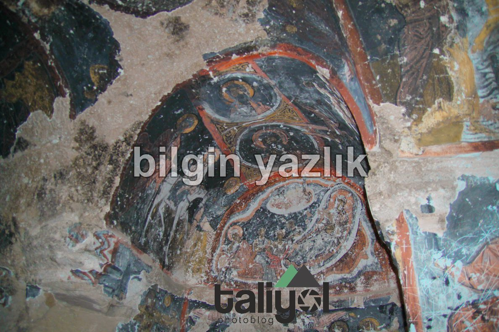
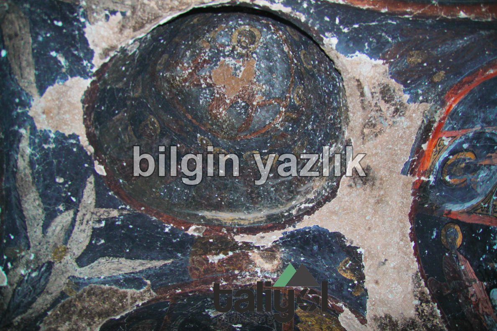
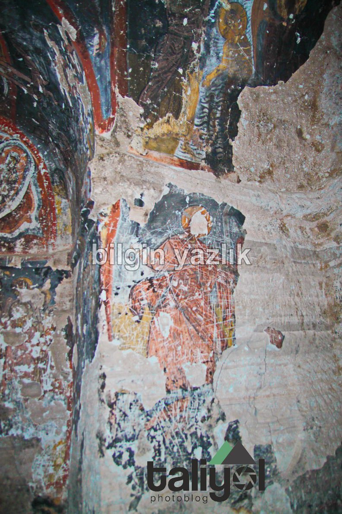
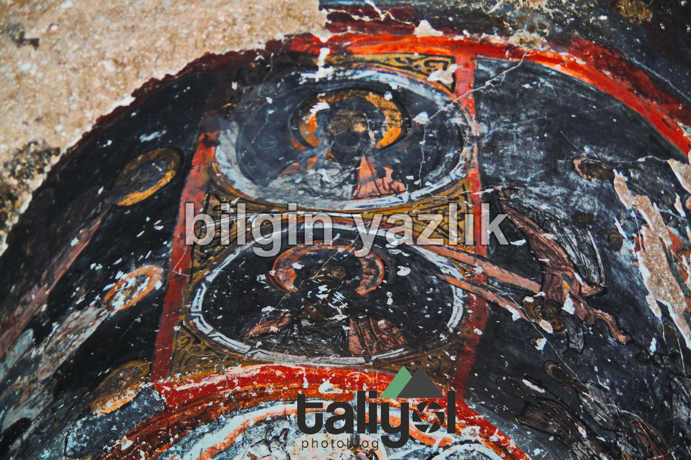
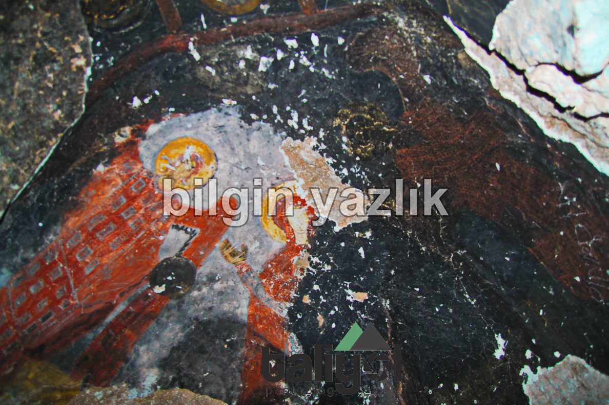
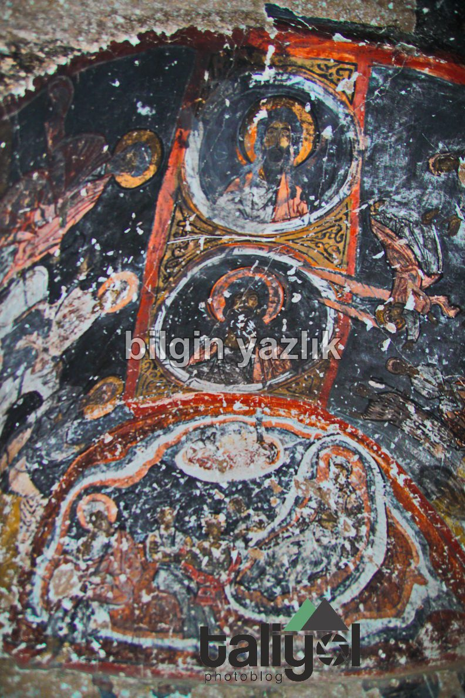
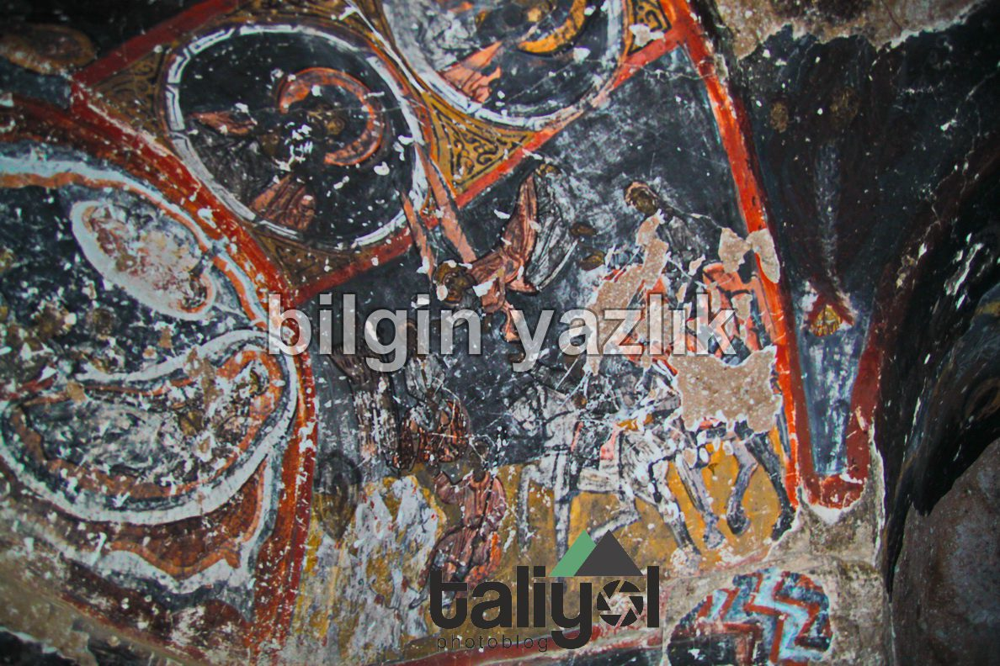
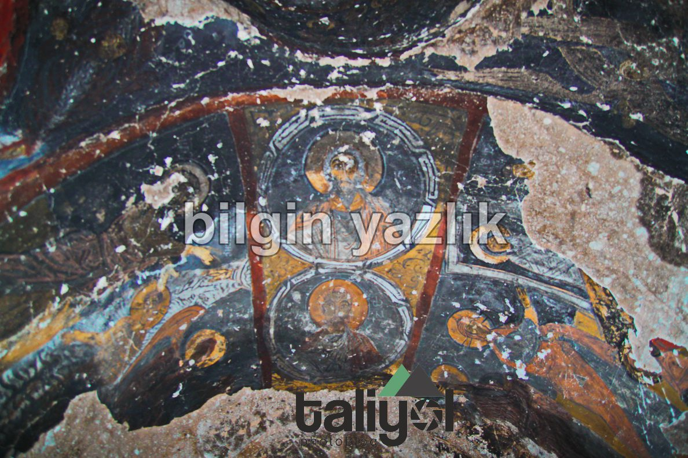
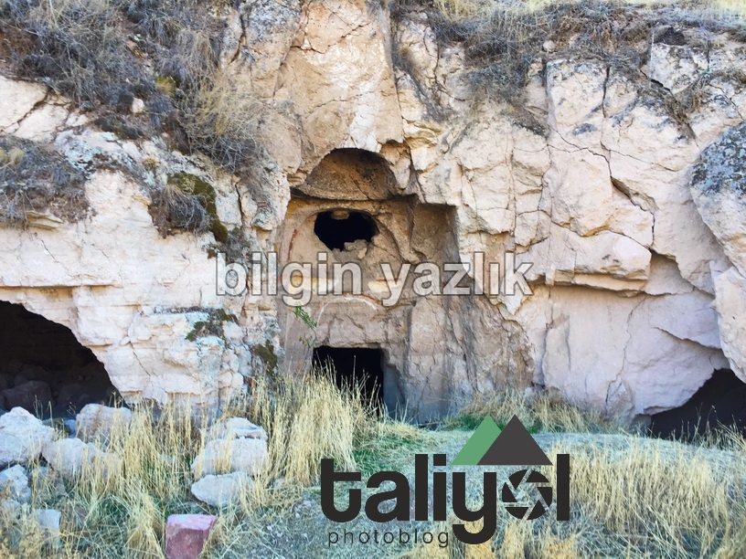

Isbıdın Antik Kilisesi
Kayseri’nin yüzündeki çizgiler gibidir vadileri, derindirler ve yaşanmışlık ile şekillenmişlerdir.
Bu vadiler genellikle doğudan batıya doğru konumlanıyorlar ve her biri bambaşka güzellikler barındırıyor.
Yıllardır, Kayseri halkları bu vadilerin içerisinde yaşamışlar ve vadileri ince ince bir dantel gibi işlemişler.
Vadilerin içinde savunma amaçlı yer altı şehirleri, gizli tüneller, sarnıçlar, bezirhaneler, kiliseler, camiler, evler, ağıllar ve saymakla bitmeyecek kadar çok çeşitli yapılar yer almaktadır.
Bugünkü adı ile Bağpınar, eski adı ile Isbıdın’da bu eşsiz güzellikteki Kayseri vadilerinin birinin koynunda yatıyor.
Isbıdın, Koramaz ya da Akbin Vadisi’nin batı çıkışında yer alıyor ve vadinin iki yakasına yayılmış. Köyün içerisinde çok sayıda taş ev bulunuyor.
Köyde, antik dönemlerden kalma bir kilise olduğunu köylülerden öğrendim ve rehberliklerinde bu kiliseye ulaştım.
Kilise, vadinin yamacına ve kuzey batıya bakacak şekilde konumlandırılmış. Kilise’nin içerisine girince eşsiz güzellikteki süslemeleri ve duvar resimlerini gördüm, burası bir kültürel miras.
Fotoğrafları aşağıda beğeninize sunuyorum.









Bu yazı taliyol arşivinden taşınmıştır. · özgün kayıt